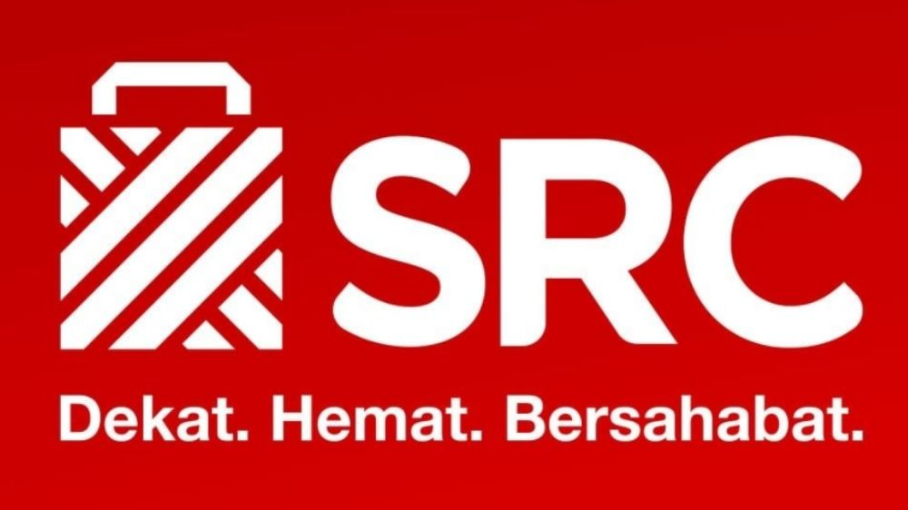

SRC LAZWARDIDekat Hemat Bersahabat |
||||
| Home | Makanan | Minuman | Detail Product | Tentang |
Tujuan kamiKami percaya pada kekuatan transformatif dari teknologi dan ingin mengubah dunia menjadi lebih baik dengan menyediakan platform untuk menghubungkan pembeli dan penjual dalam satu komunitas. Posisi KamiUntuk pengguna Internet di seluruh wilayah, Shopee menawarkan pengalaman belanja online komprehensif, dari berbagai pilihan produk sampai ke sebuah komunitas sosial untuk bereksplorasi, dan layanan untuk selalu memenuhi kebutuhan konsumen tanpa hambatan. Kepribadian KamiUntuk menggambarkan siapa kami - bagaimana kami berbicara, bertindak, dan bereaksi terhadap situasi tertentu - pada dasarnya, kami Simpel, Bahagia, dan Bersama-sama. SimpelKami percaya akan kesederhanaan dan integritas; memastikan kehidupan yang jujur, rendah hati, dan apa adanya. BahagiaKami ramah, menyenangkan dan energetik, serta menyebarkan sukacita kepada semua orang yang kami temui. Bersama-samaKami menikmati menghabiskan waktu bersama dengan teman-teman dan keluarga sekaligus berbelanja online, serta melakukan hal-hal yang kami sukai sebagai satu kesatuan. |
®2022 - Yusri Azra Lazwardi | SRC LAZWARDI Di buat untuk memenuhi tugas ke - 2 Mata Kuliah Web Programming 1 |
|||